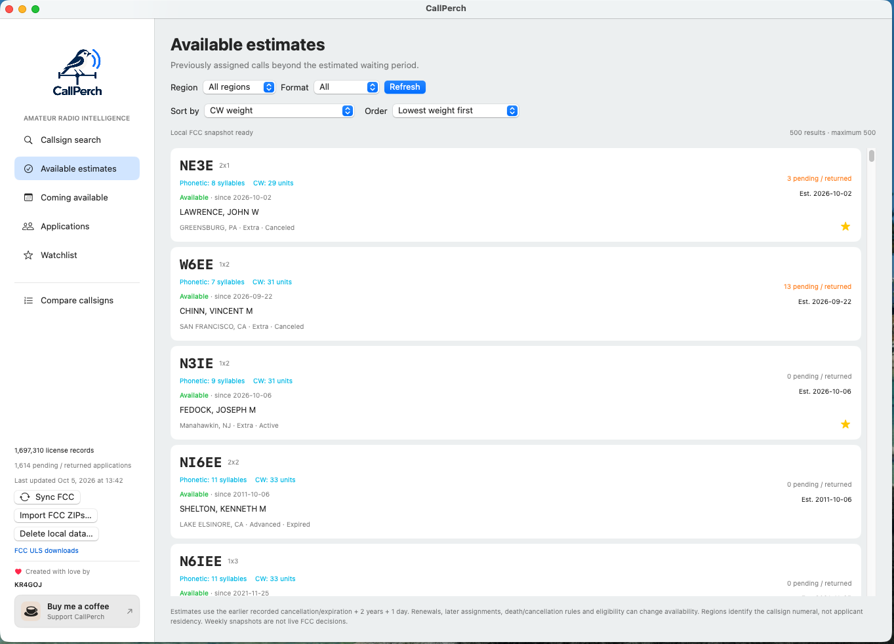

Know your options
A closer look at CallPerch
Follow the records, keep a watchlist, and find the callsign that feels right.
Research callsigns and their history
Search by callsign prefix or licensee name. Details bring together license class, dates, FCC status codes, applications, and requested vanity choices. Application counts reflect distinct requesting application IDs; they do not predict a winner.

Assignment timelines can help you inspect repeated returns to a callsign. These historical summaries do not establish intent or eligibility.
Explore available and upcoming estimates
Filter by callsign numeral, format, and upcoming date window. Lower phonetic weights mean fewer spoken syllables; lower CW weights mean shorter Morse transmission. Sort your results to suit your interests.

Calls missing from the snapshot are not automatically available. FCC exceptions, later assignments, and applicant eligibility can affect the outcome.
Keep your favorites close
Star callsigns to save them locally. On Mac, scheduled reminders can arrive even when CallPerch is closed, subject to notification and Focus settings. Open and sync the app to incorporate newer FCC data.

Find the call that fits you
The comparison workspace brings up to ten callsigns together. Add personal ratings, adjust scoring priorities, listen to CW and phonetic playback, and see QSL and plate previews. Save named comparisons and export a CSV when you want to revisit your choices.
Open Compare callsigns from the sidebar, or choose Add to comparison from a callsign’s details. Audio setup varies by platform; check the release notes for your build.

Your data stays on your desktop
Research uses a local SQLite index after the FCC import. Your watchlist and comparisons are stored locally. Mailing addresses remain hidden until you choose to reveal them. The app’s Delete local data action removes downloaded records, preferences, watchlists, and scheduled reminders.
Read the privacy policy →